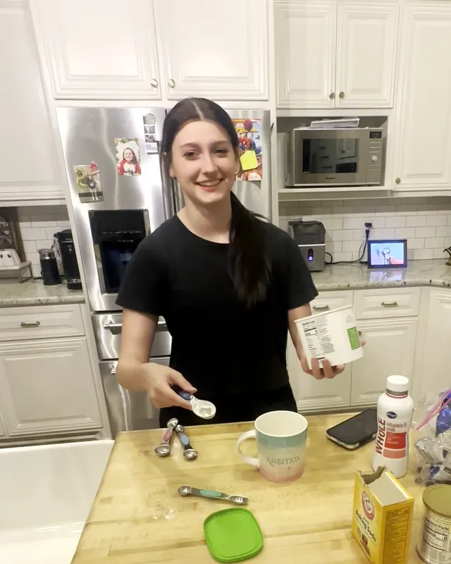

Anna Kate's Starter Recipes
Two recipes I learned early and still make all the time, plus the mistakes I made so you can skip them. Everything here uses ingredients almost every kitchen already has.

Peanut Butter Cookies
3 ingredients · 350°F · about 12 minutes
- 1 cup peanut butter
- 1 cup sugar
- 1 egg
Steps
- Heat the oven to 350°F and line a baking sheet with parchment paper.
- Add the peanut butter, sugar and egg to a bowl. Scrape every bit of peanut butter off the spoon.
- Mix until it turns into a dough you can shape.
- Roll the dough into little balls and set them on the parchment. Press a fork across the tops if you want them to look cute.
- Bake for about 12 minutes.
What the dough should look like
Thick enough to roll into a ball that keeps its shape. If it's runny, add a little more sugar. We're making cookies, and a runny dough bakes into a puddle.
Chocolate Mug Cake
One mug · microwave · about 2 minutes
- 3 tbsp flour
- 2 tbsp cocoa powder
- 2 tbsp sugar
- ½ tsp baking powder
- ½ tsp baking soda
- ¼ cup milk
- Chocolate chips, if you want them
Steps
- Add the flour, cocoa powder and sugar to a microwave-safe mug.
- Add the baking powder and baking soda. These are teaspoons.
- Pour in the milk and stir until the batter is smooth and liquidy.
- Drop in a few chocolate chips, just for funsies.
- Microwave for about 2 minutes.
Mistakes I've made, so you don't have to
Tablespoons or teaspoons?
They look almost the same on a recipe. A tablespoon is three times bigger. I still double-check every single time.
Baking powder or baking soda?
I grabbed baking powder instead of baking soda once, and my cookies came out completely flat. Read the label twice.
Cookie dough too runny
Add a little more sugar until it holds a shape. If it pours, it's a cake batter.
A recipe flopped
Everyone fails the first time. Start over. You improve with every batch.
Coming next
Chocolate chip cookies. Watch for the video on the site.